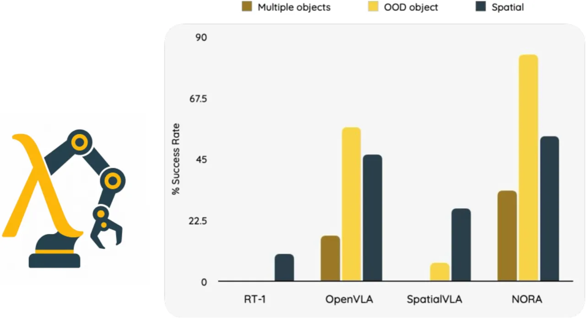
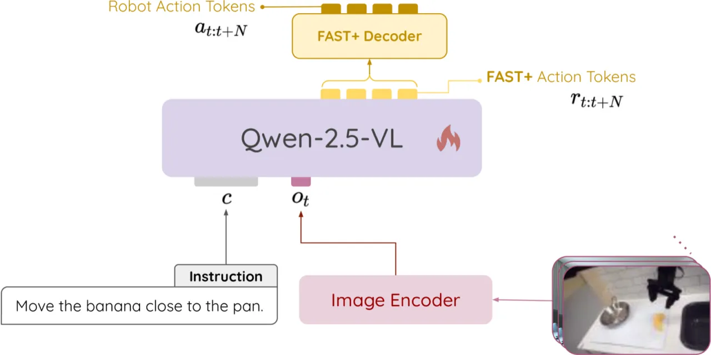
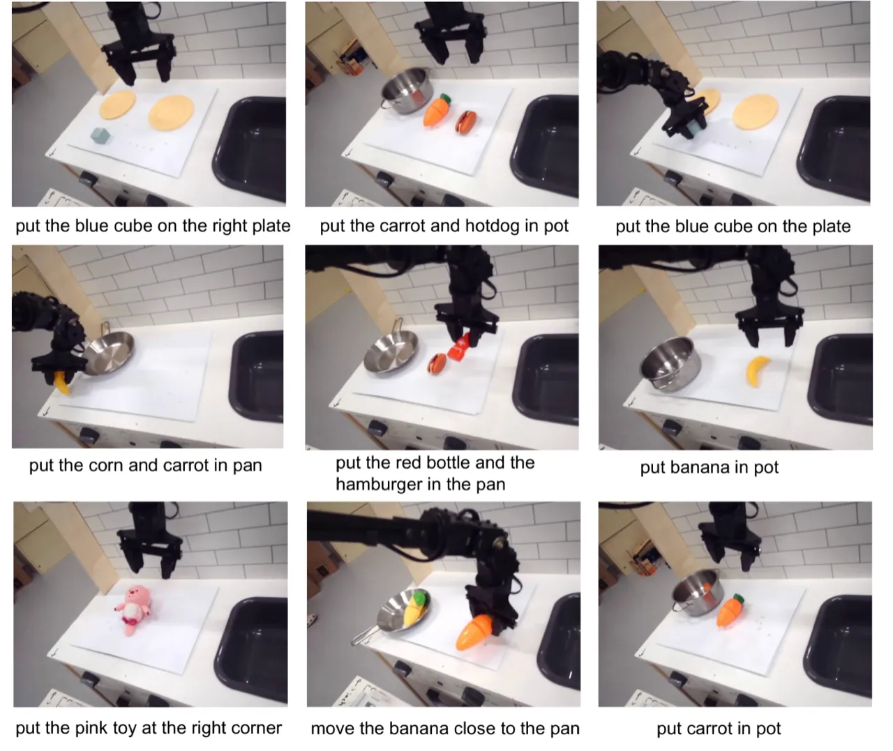
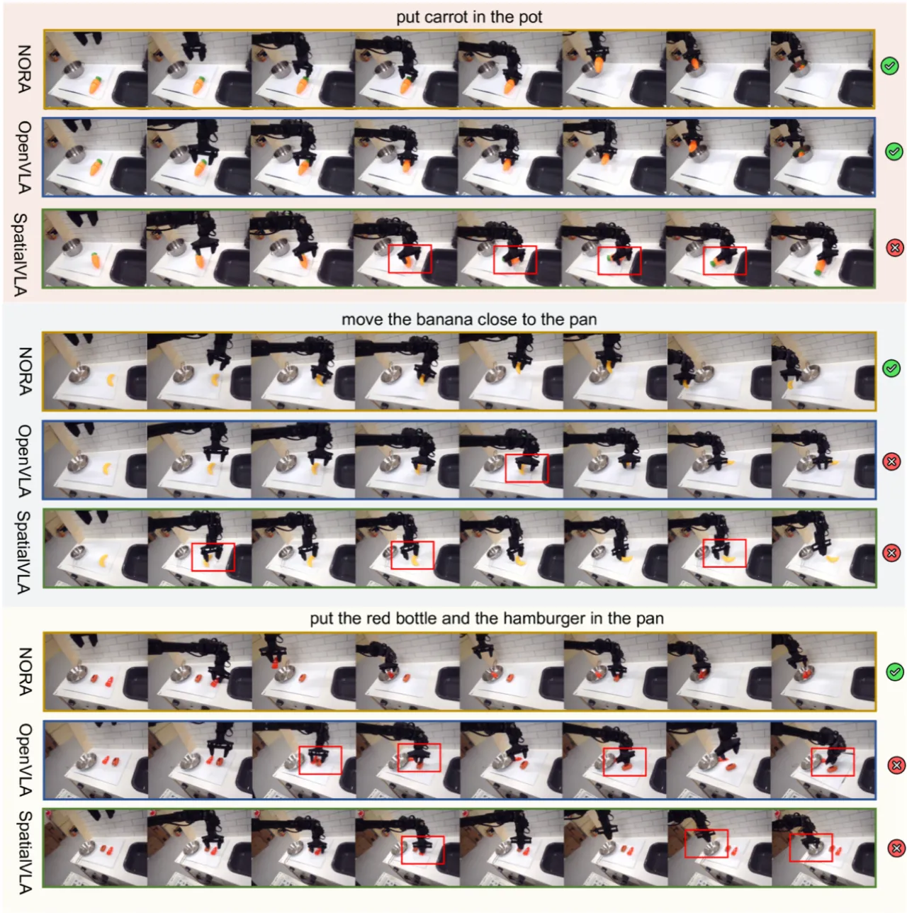

现有 VLA 模型动辄超过 7B 参数，部署成本高昂，难以在消费级 GPU 上微调。NORA 以 Qwen-2.5-VL-3B 为骨干，结合 FAST+ 动作分词器，在近 100 万条真实机器人演示上训练，用 3B 参数实现了比 OpenVLA（7B）更高的任务成功率，并在 LIBERO 仿真基准上以 87.9% 平均成功率刷新最优。
现有的 Vision-Language-Action（VLA）系统在性能上表现出色，但普遍面临计算开销过大的问题：主流模型（OpenVLA、TraceVLA、ECOT 等）参数规模接近甚至超过 7B，导致实时部署困难，且无法在消费级 GPU 上直接微调。另一方面，现有方法在精细操作任务（如目标抓取）中的视觉编码能力仍不足。
"Existing VLA models are typically large-scale, with model sizes approaching 7B parameters, such as OpenVLA, and even larger in methods like TraceVLA, ECOT, and EMMA-X."

NORA 以 Qwen-2.5-VL-3B 多模态大模型为骨干，引入 FAST+ 动作分词器对连续动作进行高效离散化，并在 Open X-Embodiment（OXE）数据集的近百万条真实机器人演示上预训练，形成通用机器人控制策略。推理时，模型接受视觉观测与自然语言指令，自回归预测动作 token 序列，再解码为连续控制信号。

FAST+ 对每个时间步的动作维度施加离散余弦变换（Discrete Cosine Transform，DCT），对关节动作分量去相关，再使用字节对编码（Byte-Pair Encoding，BPE）将其压缩为更短的 token 序列。相比直接离散化，FAST+ 保留了高度相关动作之间的结构信息，使模型能以更少的 token 精确表达灵巧操作动作。论文中提出了两种推理变体：
预训练数据为 Open X-Embodiment（包含 BridgeV2、DROID 等子集），共约 97 万条真实机器人演示。训练使用 8 张 H100 GPU，总计约 4,000 GPU 小时，batch size 256，梯度更新约 110 万步；优化器为 AdamW，配合线性预热和余弦衰减调度；输入分辨率为 224×224。
实验分两部分：（1）真实世界 WidowX 机器人上的 9 项多样化操作任务评估；（2）LIBERO 仿真基准（4 个任务套件共 40 个任务）。基线模型包括 RT-1、OpenVLA、SpatialVLA 及其 action chunking 变体（AC）。
| 方法 | 平均成功率 (%) |
|---|---|
| RT-1 | 4.4 |
| SpatialVLA | 11.1 |
| OpenVLA | 40.0 |
| NORA（本文） | 56.7 |
NORA 在 out-of-domain 零样本抓取任务上表现尤为突出，例如"put the carrot in pot"和"put banana in pot"的成功率高达 90%，而 OpenVLA 在香蕉任务上仅为 40%。

| 方法 | LIBERO-Spatial | LIBERO-Object | LIBERO-Goal | LIBERO-Long | 平均 |
|---|---|---|---|---|---|
| OpenVLA fine-tuned | 84.7 | 88.4 | 79.2 | 53.7 | 76.5 |
| TraceVLA fine-tuned | 84.6 | 85.2 | 75.1 | 54.1 | 74.8 |
| NORA fine-tuned | 85.6 | 87.8 | 77.0 | 45.0 | 73.9 |
| SpatialVLA fine-tuned-AC | 88.2 | 89.9 | 78.6 | 55.5 | 78.1 |
| NORA fine-tuned-AC | 85.6 | 89.4 | 80.0 | 63.0 | 79.5 |
| NORA-Long fine-tuned | 92.2 | 95.4 | 89.4 | 74.6 | 87.9 |

论文对 action chunking（chunk size）和推理变体进行了系统消融。在仿真（LIBERO）中，action chunking（NORA-Long）带来大幅提升，LIBERO-Long 成功率从 45.0%（chunk=1）跃升至 74.6%（NORA-Long），提升了 29.6 个百分点。而在真实机器人上，由于物理误差累积，chunk size 增大反而导致性能下降，NORA（chunk=1）优于 NORA-Long。此外，在有干扰物（distractors）的场景下，两种策略的成功率均有显著下降，说明视觉鲁棒性仍是待解难题。
论文指出："NORA appears much more precarious at below 50% success rate on multi-object tasks, indicating substantial room for improvement in handling multiple objects." 多对象抓取和放置任务中，NORA 成功率不足 50%，表明模型在复杂场景下的泛化能力有限。
NORA-Long 在真实 WidowX 机器人上存在抓取方向估计不准的问题，论文描述为"consistently attempting to grip objects from the side — specifically around the 2 o'clock direction"，即始终从侧面（约 2 点钟方向）尝试抓取，导致小型物体（如香蕉）抓取失败率升高。
在真实机器人平台上连续执行预测动作序列时，NORA-Long 产生"excessively large movements"（过大的运动幅度），进一步导致任务失败。仿真环境中的优势无法直接迁移到真实物理系统，sim-to-real gap 问题仍待解决。
在引入环境干扰物（distractors）的测试中，NORA 和基线模型的成功率均有显著下降，说明当前模型的视觉语义理解尚未达到在复杂真实场景中稳健运行的水平。